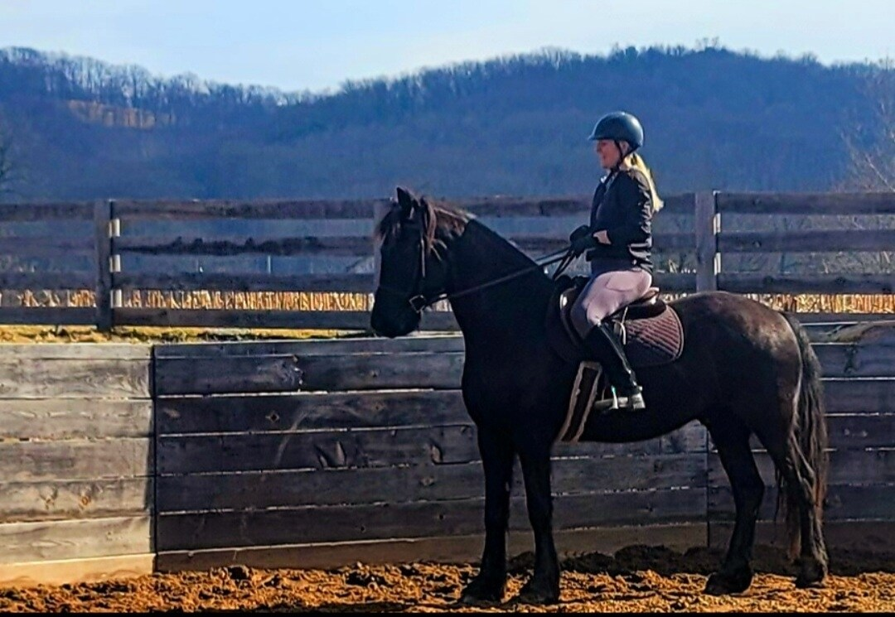

Available
Fame
Dash For Cash × Miss Delaware Run
Age6
Height14.1h
SexMare
Racebred broodmare, currently in foal. Calm around new people, easy to handle, proven producer.
Gate One · The Barn
Every pony at Delaware Run is registered with the American Quarter Pony Association, handled daily from foaling, and comes with full pedigree papers and race records where they have them.
Dash For Cash × Miss Delaware Run
Racebred broodmare, currently in foal. Calm around new people, easy to handle, proven producer.
Sire: Dash For Cash · Dam: Fame
Fame's current colt — bold and already fast across the paddock. Halter-trained, up to date on vaccinations.
POA registered · Sire: Starbright · Dam: Juniper Creek
Pony of the Americas, started under saddle this spring. Reserved for a family in Lewisburg — check back for her next sibling.
Sire: Northern Creek · Dam: Juniper Creek
Juniper's next foal, due late winter. Join the Farm Letter to hear the moment they're born.
Imported Friesian cross · Sire: Ferrande · Dam: Delaware Mist
Imported bloodline, quiet temperament, green-broke to saddle. A striking mover with a gentle disposition.
Sire: Dash For Cash · Dam: Miss Delaware Run
Full sibling to Kato, out of our foundation mare. Expect strong demand — the litter list applies to foals too.
From our paddock to yours
Tell us what you're looking for — racing, breeding, or a first pony for a young rider.
Meet the pony, watch them move, and see how they're kept. Visits by appointment.
Bring your own vet for a pre-purchase exam. Coggins and vaccination records shared in full.
Papers transferred, plus help arranging transport. We're always a phone call away after.
Not seeing the right pony yet?
We typically foal out in late winter and early spring — join the list to hear about new arrivals before they're listed here.
